Jeu(x) de lumières
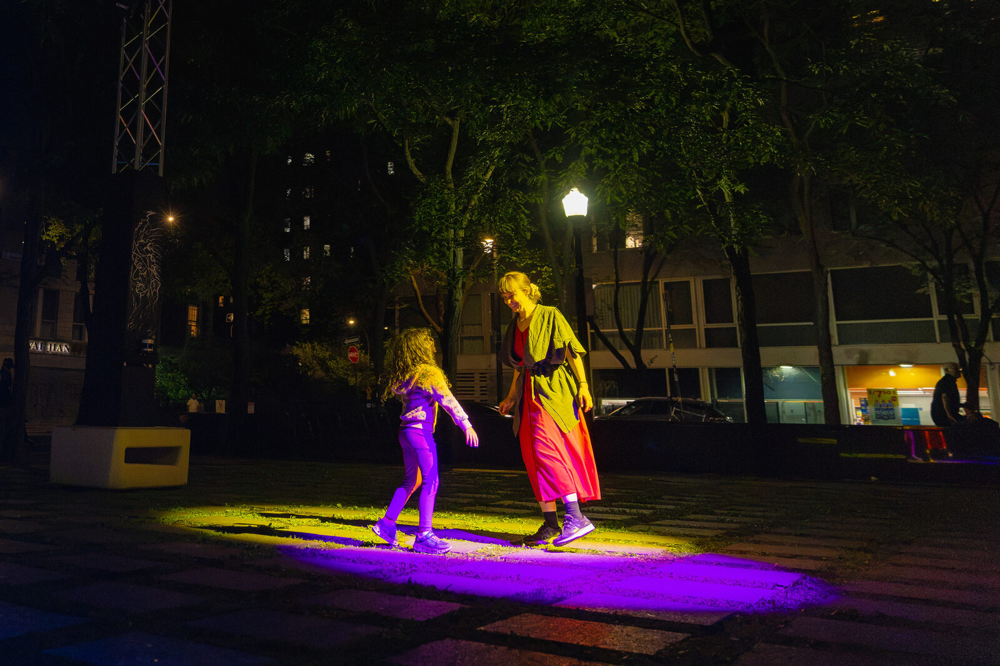
Jeu(x) de lumières, c'est une série de petits jeux coopératifs. Un prétexte pour que les gens se trouvent ; pour être créatif·ve·s, joueur·se·s et sérieux·ses ensemble. Une occasion pour que des voisin·e·s jouent ensemble : avec ou sans logis, jeunes et moins jeunes. Un endroit où amener ses ami·e·s, ou s'en faire de nouveaux.
Présenté en première mondiale en août 2026 à la place de la Paix, à Montréal, dans le Village Numérique de MUTEK, avec la Société des arts technologiques (SAT) dans le cadre de ses 30 ans.
Le terrain de jeu
Jeu(x) de lumières, c'est une poignée de petits jeux qu'on joue ensemble la nuit dans le parc, sur une grille de dalles de béton de 12 mètres sur 18. Pour tout dispositif : quatre projecteurs, comme ceux d'une scène, quelques caméras spéciales (LiDAR) qui repèrent où sont les gens, et des haut-parleurs. Approchez-vous, et une lumière s'allume avec vous. On entre dedans et on y joue. On ne la regarde pas de loin.
La place de la Paix est un espace public où plusieurs communautés et plusieurs réalités cohabitent : des gens qui passent, des fidèles de la mosquée voisine, des planchistes, des résident·e·s, des personnes en situation d'itinérance, le personnel de la SAT, des touristes. On ne voulait pas déposer une installation dans ce lieu, mais faire une œuvre capable d'y cohabiter.
Quatre jeux (et quelques secrets)
On a imaginé une vingtaine de jeux, puis on a gardé les meilleurs. Quatre se jouent dans le parc, et quelques jeux secrets s'y cachent encore.
Ami. On danse avec ses ami·e·s et avec la lumière. Une lumière suit chaque personne, comme un animal tout doux. Plus on se rapproche des autres, plus les lumières et les sons changent et grandissent.
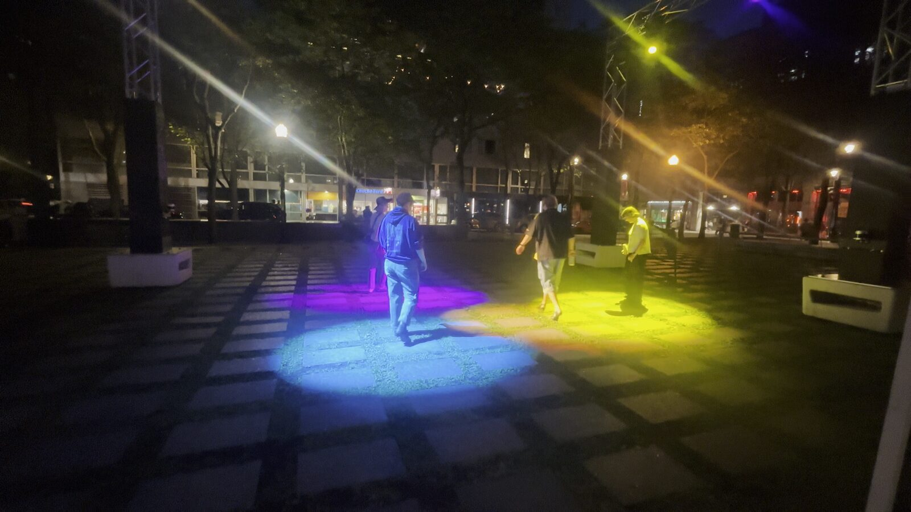
Serpent. Il faut rester sur une dalle allumée pendant qu'elle se déplace, d'abord seul·e, puis avec les autres. Quand on monte sur sa dalle, elle vire au vert et se met à chanter. Doucement, elle nous mène vers les autres. Une à une, les dalles se rejoignent et avancent ensemble comme un serpent, qu'on suit à plusieurs.
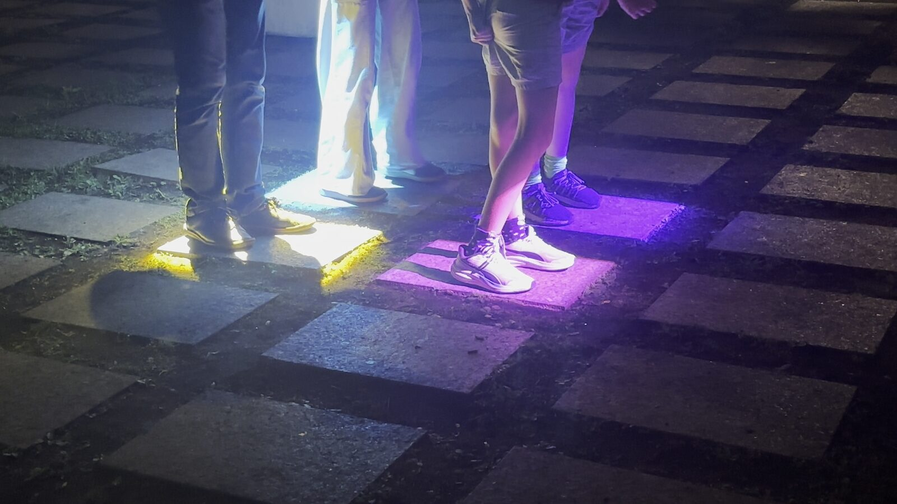
Traque. On court et on saute sur les dalles allumées, à l'unisson, avec ses ami·e·s. Le jeu accélère petit à petit, jusqu'à ressembler à un jeu de la taupe.
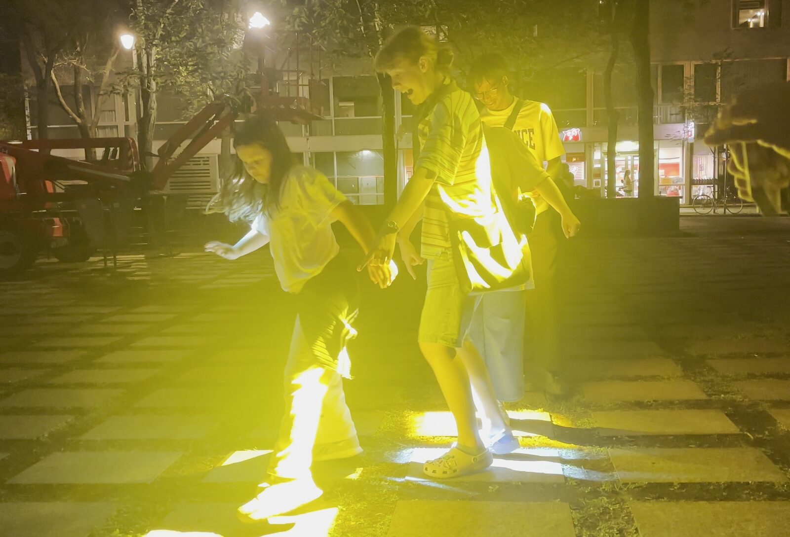
Peinture. On peint avec de la musique et de la lumière. Chacun·e reçoit une couleur et peint les dalles avec ses pas ; ensuite, les dalles rejouent le parcours, et on entend ce qu'on a créé.
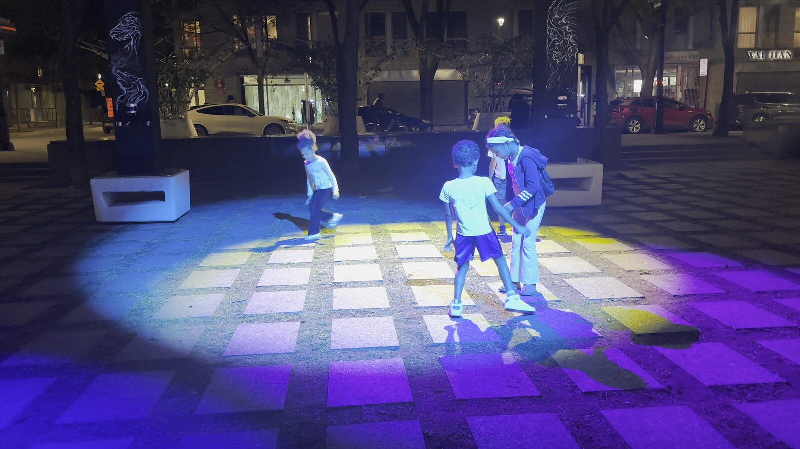
À l'intérieur de la machine
Il se passe beaucoup de choses sous le capot : du code de jeu sur mesure, un suivi des corps en temps réel, et une lumière et un son qui réagissent à quatre personnes à la fois. Le tout repose sur Carto, un outil libre développé à la SAT pour ce genre d'œuvre interactive et collective.
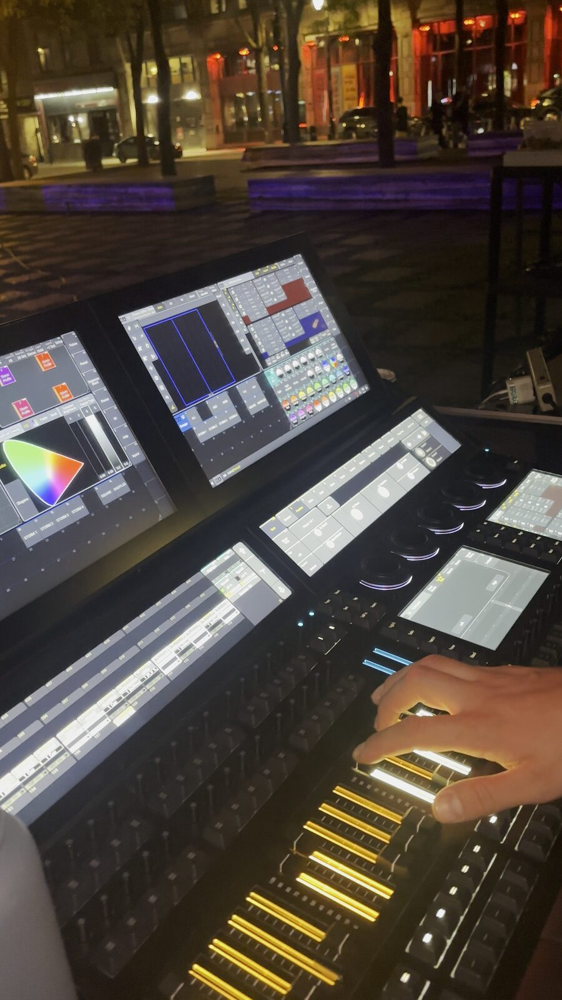
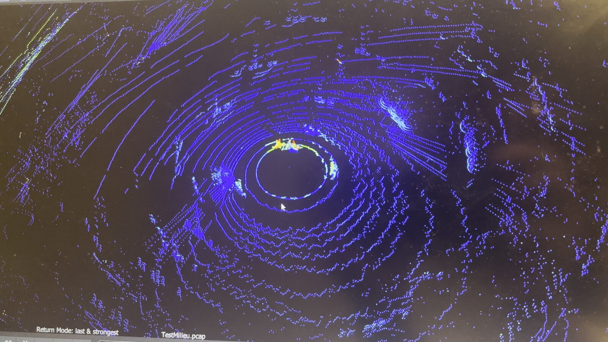
Conçu par le jeu
Dans ma pratique de conception de jeux, je commence toujours par jouer, tout de suite. Qu'est-ce qu'il y a ici? Est-ce que c'est le fun? Qu'est-ce que ça me donne envie de faire? Donnez-moi une simple lumière au sol, et je vais :
- courir et bondir dessus
- la pourchasser
- essayer de l'écraser
- faire des ombres chinoises
- essayer de l'empêcher d'atteindre le sol
- imaginer qu'elle me poursuit, et me sauver
- imaginer qu'elle me poursuit, sortir du jeu, puis y resauter vite pour attraper des choses sans me faire prendre
- imaginer que la lumière est mon animal, un·e ami·e tout·e douce qui me suit
Chacun de ces gestes est le germe d'un jeu.
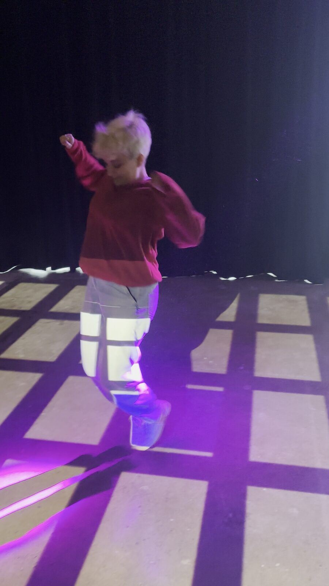
Quand il n'y a personne, on joue avec des mannequins posés sur des chaises de bureau. Le test de jeu, c'est le cœur battant de la conception : une part d'enquête, une part d'intuition, une part de pure magie. On rejoue, encore et encore, jusqu'à ce que ce soit juste.
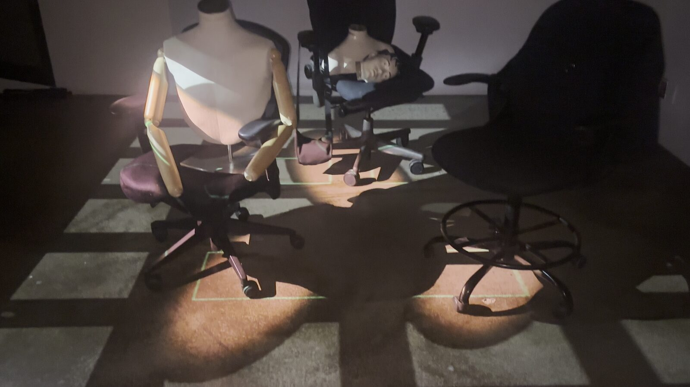
On a aussi fait en sorte que l'information essentielle passe à la fois par le son et par la lumière, pour qu'on puisse jouer avec l'un, l'autre, ou les deux.
Fait avec le quartier
L'œuvre a été conçue avec le quartier, pas pour lui. On a travaillé avec l'Agence Dragon-Fly, qui fait déjà du terrain auprès des personnes en situation d'itinérance à la place de la Paix, et on les a impliquées comme expertes de l'espace public. À travers des résidences, des ateliers, des tests avec le public et un laboratoire ouvert de dix jours sur place, on a écouté, recueilli des commentaires et ajusté l'installation aux réalités du lieu.
Pour l'agence, l'installation est devenue un espace où poursuivre son travail et partager ses propres réalités avec le public. Ces personnes ont été nos gardien·ne·s et nos ami·e·s, chaque soir.
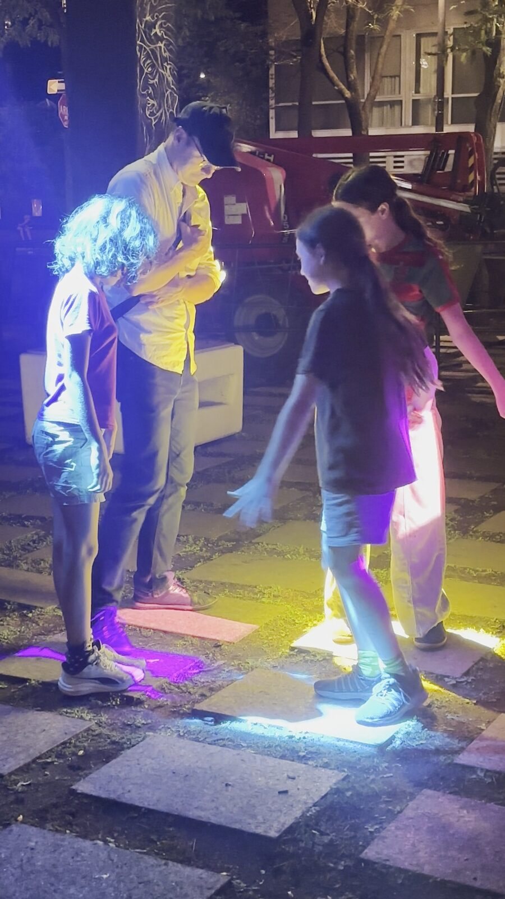
Et ensuite
C'était notre première expérience du genre, et on veut continuer : rejoindre plus de gens, travailler avec plus de communautés, explorer ce que la technologie, le jeu et la co-création rendent possible dans l'espace public.
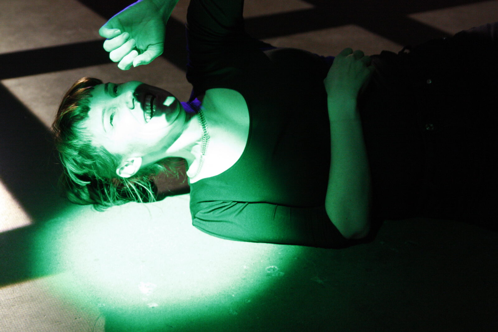
Crédits
Direction artistique, conception des jeux, du son et de la lumière : Marie LeBlanc Flanagan. Vision par ordinateur : Manuel Bolduc (SAT). Responsable du Living Lab (SAT) : Alexandra Marin. Intégration des systèmes multimédias et installation sur place : Zachary L'Heureux (SAT). Partenaire en éclairage : CR34TE (Marc-Olivier Bisson).
Présenté en première mondiale avec la Société des arts technologiques (SAT), dans le cadre de ses 30 ans, et montré dans le Village Numérique de MUTEK. Co-présenté avec le Partenariat du Quartier des spectacles (PQDS). Avec le soutien de l'arrondissement de Ville-Marie et de la Ville de Montréal, de l'Agence Dragon-Fly, de la Table de concertation du faubourg Saint-Laurent, de CR34TE et de GM Location. Merci à toutes les personnes qui ont pris part à la co-création. Photos : Luz Montero et SAT.